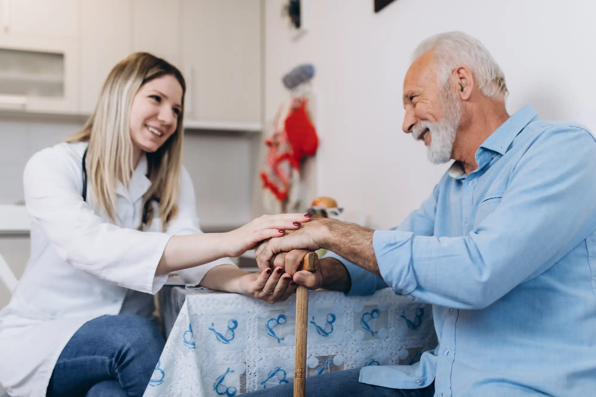
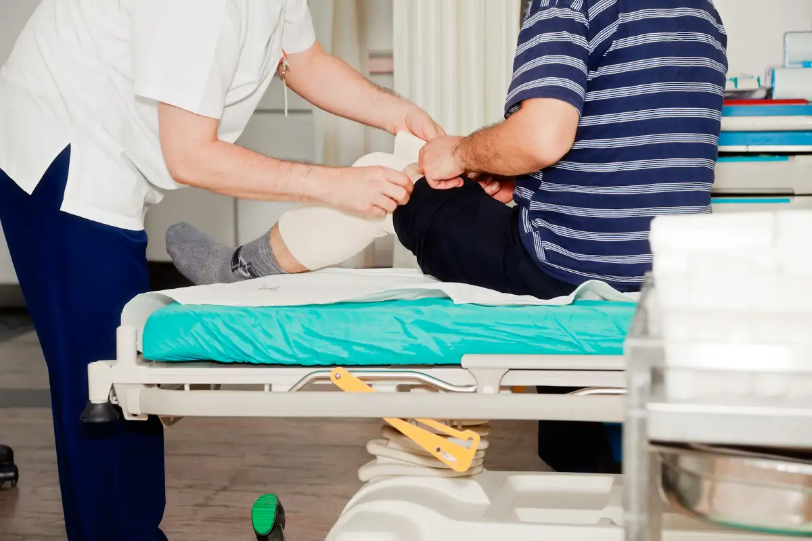

Hospitals and facilities
WoundRounds
Our flagship wound management and prevention solution. Clinical workflow and documentation that help wound clinicians deliver better care in less time.
About WoundRounds
Integrated wound documentation, risk prevention and clinical oversight that help healthcare teams deliver better care in less time.
WoundRounds captures the assessment at the bedside. WoundEye captures it at home, and our workflow agents put it on the specialist’s worklist. Certified wound specialists make every clinical decision.
We help care teams deliver better outcomes for complex wounds, and reduce risk and liability for the organizations they work for. Precision wound assessment, care optimization and a clinical oversight team support workflows that last.
Our commitment is to patient care and to the well-being of providers and their organizations.

From the hospital bedside to the facility to the kitchen table, each setting gets the tool built for the person holding the wound.
Hospitals and facilities
Our flagship wound management and prevention solution. Clinical workflow and documentation that help wound clinicians deliver better care in less time.
About WoundRoundsHome and health plan populations
A patient or carer photographs the wound on their own mobile device. A clinician assesses it the same day, and the care team sees the trend.
How WoundEye worksAny setting
Expert review of wound documentation by certified wound specialists, so assessments are accurate, complete and defensible.
About AssureStageOur technology and clinical services reduce the cost of care delivery while lowering risk and liability for provider organizations.
reduction in full-thickness hospital-acquired pressure injuries over the most recent two years at The Hospital for Special Care, a 236-bed long-term acute care hospital.
Read how one hospital did itClients report saving 8 to 10 nursing hours a week, and clinicians using the technology stay 35% longer.
Deployed nationwide in the settings where wounds are most common and most consequential.
Daily documentation, risk prevention and survey readiness for long-term and short-stay residents.
High-acuity patients and the highest pressure-injury risk in post-acute care.
Accurate admission assessments, so wounds present on arrival are recorded as such.
Specialist-level wound oversight where specialists are scarce.
With WoundEye, the first look happens where most chronic wounds are first noticed: at home.
The wound that costs the most is the one nobody saw in time. WoundEye gives the person who is there a way to get a clinician’s eye on it the same day, and gives the plan a dated, clinician-signed record from day one.
A short demonstration with our clinical team, tailored to your setting.